Created: 13.02.2018
By: MWTemplates
Email: support@modernwebtemplates.com
Thank you for purchasing our HTML template with Visual Builder. If you have any questions that are beyond the scope of this help file, please feel free to email us via my user page contact form. Thanks so much!
There are two HTML files and one folder that is related to Visual Builder. These are
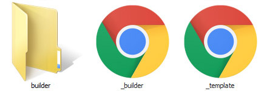
You can use the builder to create singlepage or multipage websites without coding!
You can launch and use Visual Builder as local file, even without webserver at all!
But for the best user experiance before using the builder you need to upload your files on webserver with PHP support.
Open _builder.html in your browser.
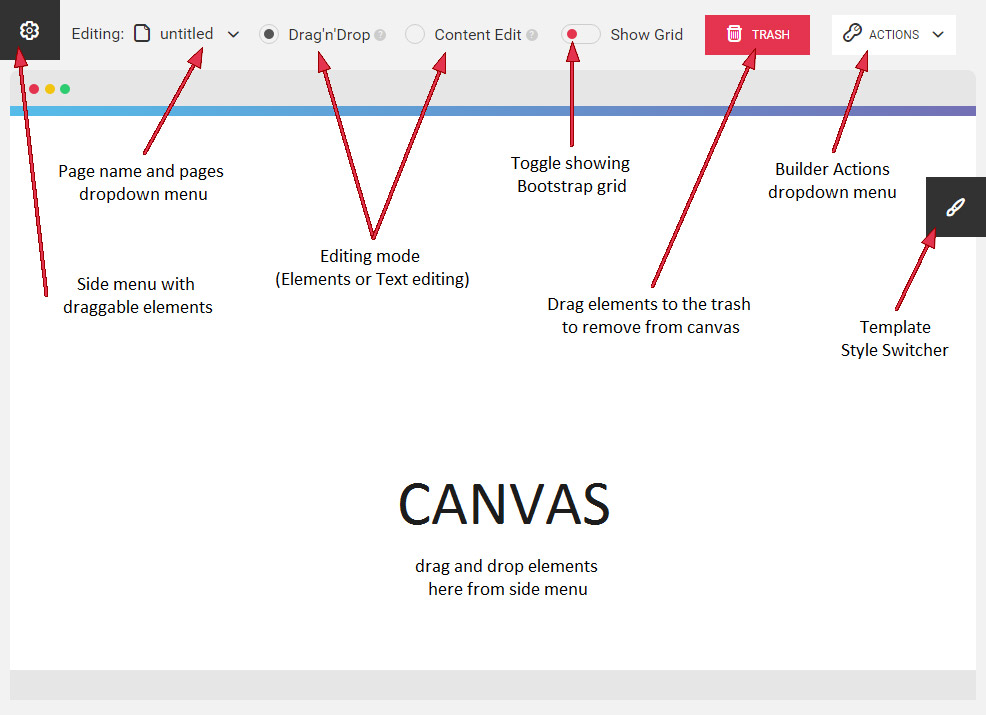
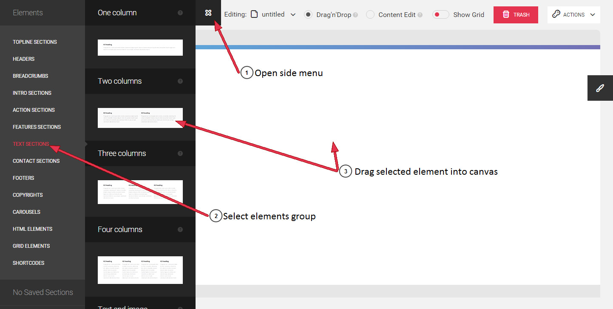
If you need to delete some element, such as column content, the whole column or even full row or section, just drag it into the trash that is in the top of your builder.
You may also click on "Delete section" and "Delete column" buttons when hovering on certain section or column:
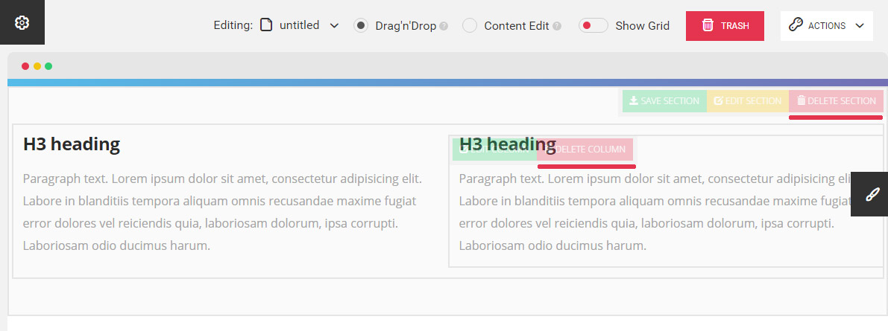
When you are building your layout in Drag'n'Drop mode you may want to customize the predefined sections: add or change background images and color, sections and paddings etc.
To do this just hover on section that you want to customize (in Drag'n'Drop mode) and click on "Edit section" button it top right corner of your section:
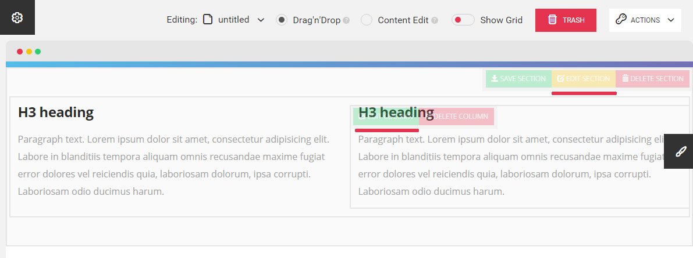
and you'll see the popup window with all the section's options:
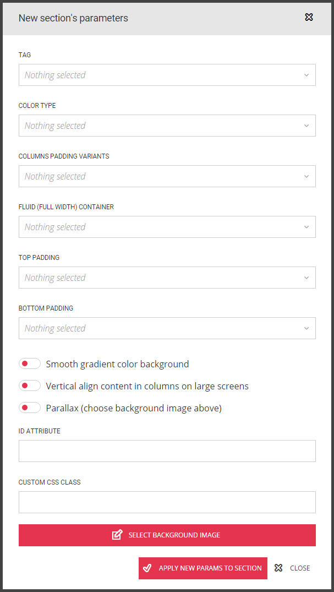
You can change section tag (section, header or footer), background color and image, vertical paddings, bootstrap container type (regular centered or fullwidth fluid), align your content in section columns verticaly on large screens (as in table), add an ID attribute to sections etc.
You may also want to change Bootstrap columns that are inside your sections.
To do this just hover on column inside a section that you want to customize (in Drag'n'Drop mode) and click on "Edit column" button in the top left corner of your column and you'll see the popup window with column's options:
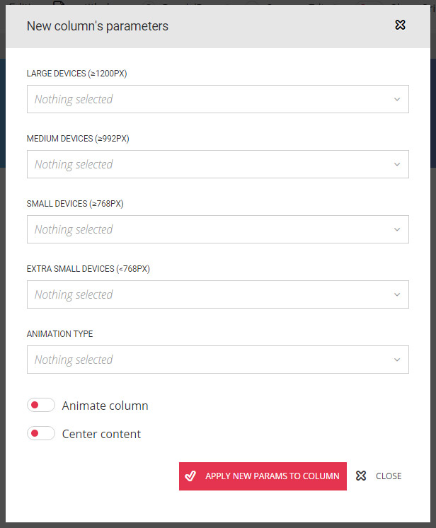
In this popup you can set a column width on different screen sizes, center the column content and set an animation for the column.
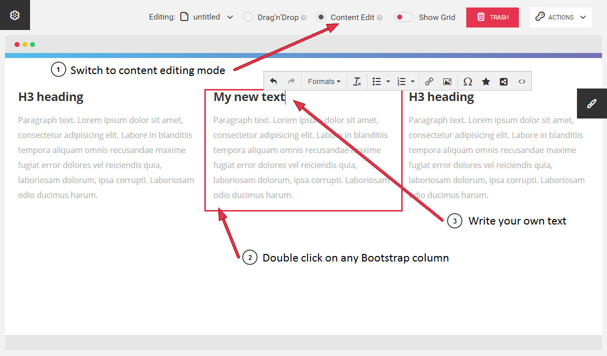
When you're done with building page layout and editing your content you can save your page:
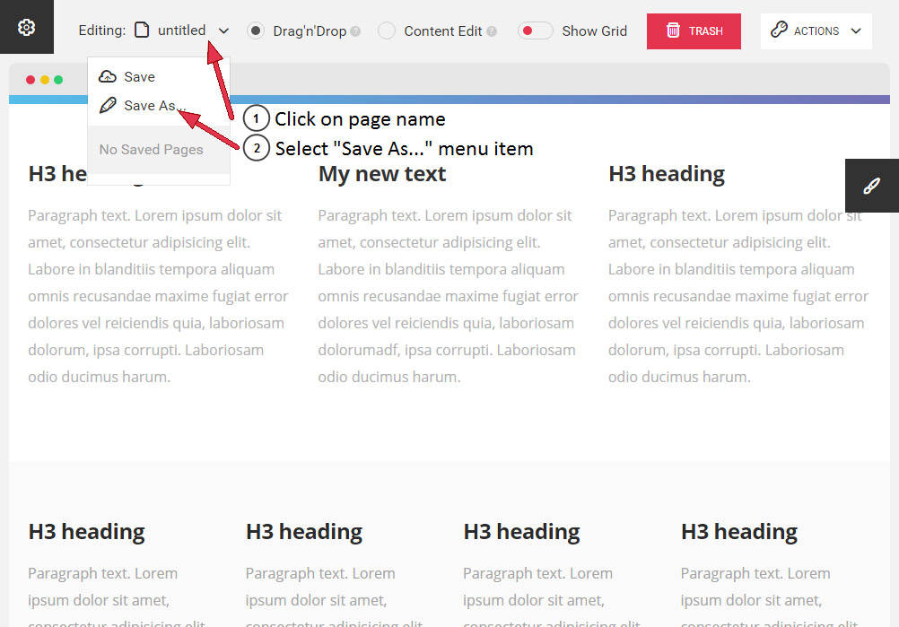
Choose page title and page name (which will be used for HTML file name) and hit "Save Page":
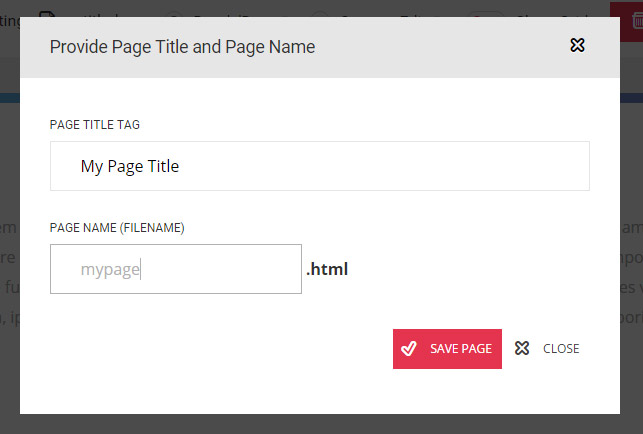
Now you can see your saved page in pages dropdown and in side menu below "Saved pages" title:
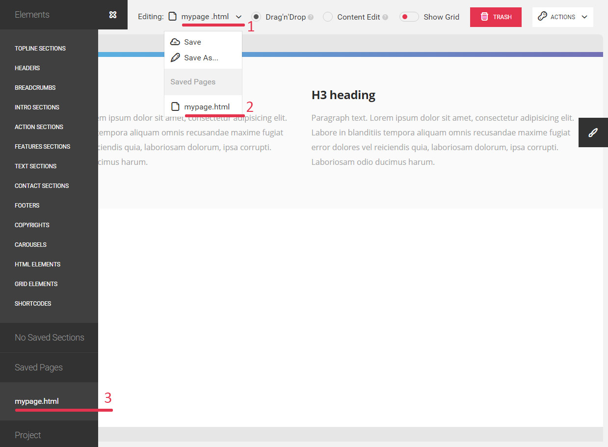
If you click on saved page title in dropdown menu or click on page title in side menu and click on "Edit page" button, you can start editing your saved page. Current page that you are editing will be replaced with saved page.
When you are finished with editing your previously saved page you need to open pages dropdown menu by clicking on page name and hitting "Save" to replace old page.
Also you can save those page as another page by clicking "Save as..." and choosing a new page name. You can perform this action if you need a new page that is based on previously saved page (ex. for subpages).
If you need to delete some pages just open side menu, click on saved page name and hit "Delete page" button.
You may want to save your project for later editing.
You can export project and import your previosly saved project by clicking on the appropriate link in Actions dropdown menu at the top of your builder or at the bottom of your side menu:
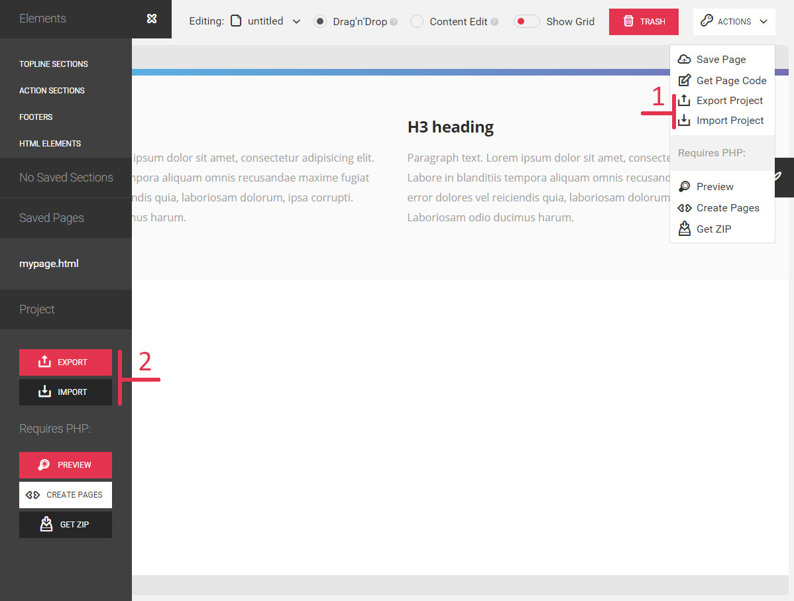
By clicking "export" on the webserver with PHP support you'll get your project file project_***.zip which you can later import in builder.
If you run builder locally by clicking "export" you'll see the popup window with the code that you can copy and paste in a new file and save it for future importing.
Click on Import for import of your previosly exported project file (ZIP or manual saved file).
When you're done with building your pages you need to generate HTML files or create full project archive.
You can generate HTML files and create project archive by clicking the appropriate buttons in Actions dropdown menu at the top of the builder or at the bottom of the side menu:
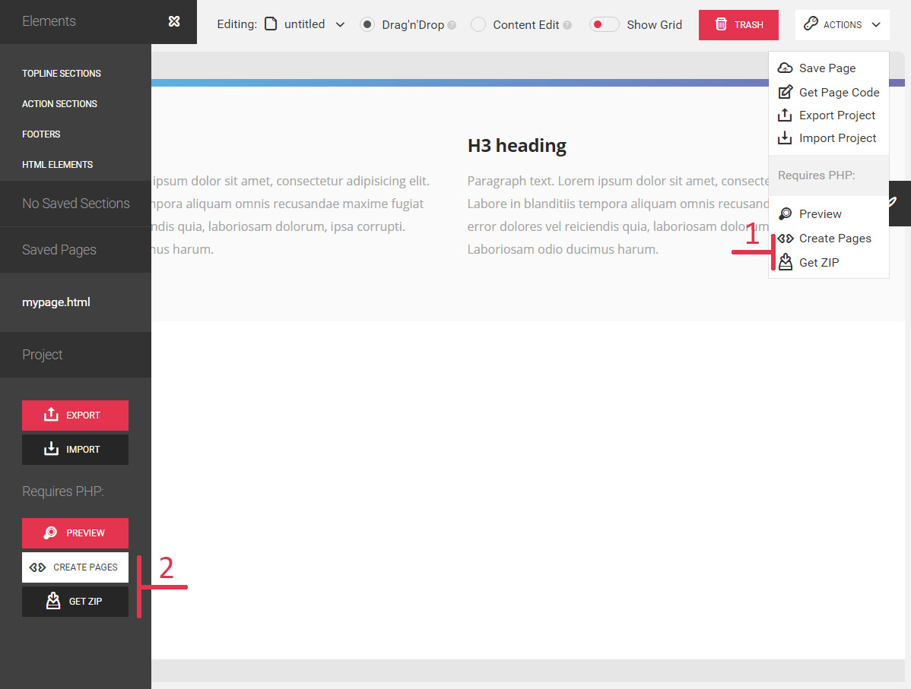
By clicking "Create Pages" button all of your saved pages will be created as HTML files in your siteroot directory.
By clicking "Get ZIP" button all the content of your siteroot directory except builder folder and files will be zipped
As we mentioned earlier, we used Twitter Bootstrap v3 as CSS framework and HTML5 Boilerplate for this template.
© Copyright 2018. ClearView. All Rights Reserved.